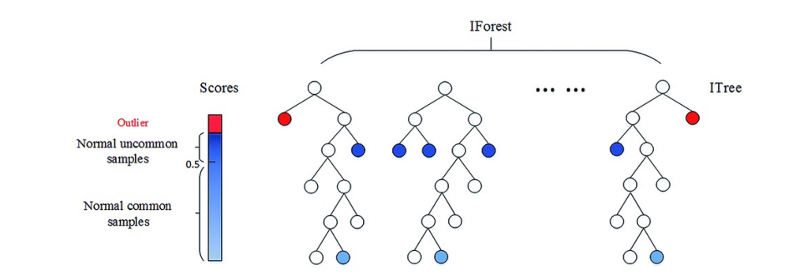
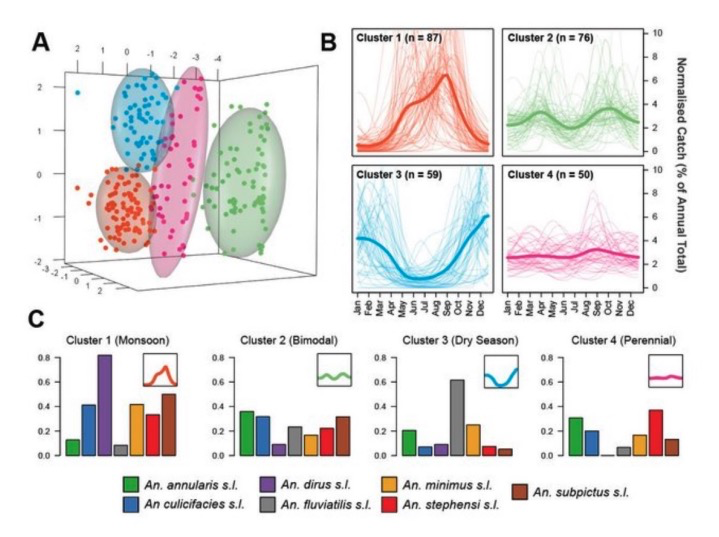

AIOps调研🔥
指标获取：人工录入、服务打标，保证质量；
指标范围：仅核心服务的指标，不搞大水漫灌
自动巡检&监控有何区别？
监控一般是定时（例如五分钟）采集设备各项指标值，然后根据阈值，判定指标状态。平时采集的数据用于分析，发生故障时，实时告警，一般情况下，各指标的监控信息是相对孤立的；
而自动巡检可全面连动扫描一遍设备，执行频度相对监控会稀疏些，在程序实现上，可以针对监控历史数据分析，进行事前预警，以及关联分析出结论。
综上，可以理解为：人工巡检是监控不能到达范围的补充，而自动巡检可以代替手工检查设备状态，完成一次全面深度的设备检测。监控、人工巡检、自动巡检是IT运维中相辅相成的环节。
# 异常表现形式
突增突降(包括持续一段时间增降)
静态阈值(持续)
同环比
# 异常检测
定义
不同于常规模式下的问题和任务，异常检测 （Anomaly Detection ） 针对的是少数、不可预测或不确定、不符合预期模式的事件的识别，它具有独特的复杂性，使得一般的机器学 习和深度学习技术难以直接应用。
异常检测的应用领域
- 点异常：少数个体实例是异常的，大多数个体实例是正常的；例：正常人与病人的健康指标
- 条件异常（上下文异常）：在特定情境下个体实例是异常的，在其他情境下都是正常的；例：在特定时间下的温度突然上升或下降
- 群体异常：在群体集合中的个体实例出现异常的情况，而该个体实例自身可能不是异常，在入侵或欺诈检测等应用中， 离群点对应于多个数据点的序列，而不是单个数据点.例：信用卡突然短时间内不停地消费50元的记录集合作为群体异常子集，但子集中的个体可能与真实消费记录一样正常
异常检测针对的数据
- 统计数据，比如表格数据、网络流；
- 序列数据，比如时间序列，蛋白质序列；
- 空间数据，比如图形和视频。
异常检测算法分类
按照学习方式的不同
- 有监督异常检测（Supervised Anomaly Detection） 在训练集中的正常实例和异常实例都有标签，这类方法的缺点在于数据标签难以获得或数据不均衡（正常样本数量远大于异常样本数量）
- 半监督异常检测（Semi-Supervised Anomaly Detection） 在训练集中只有单一类别（正常实例）的实例，没有异常实例参与训练
- 无监督异常检测（Unsupervised Anomaly Detection） 在训练集中既有正常实例也可能存在异常实例，但假设数据的比例是正常实例远大于异常实例，模型训练过程中没有标签进行校正
- 弱监督异常检测 主要是针对异常实例不完全、粗粒度标签、部分实例标签错误等情况进行算法设计
现实情况的异常检测问题，由于收集异常标签样本的难度大，往往是没有标签的，所以无监督异常检测应用最为广泛。
按照异常类别的不同
- 异常点检测(如异常消费用户)
- 上下文异常检测（如时间序列异常）
- 组异常检测（如异常团伙）
按照训练集是否包含异常值
- 异常值检测（outlier detection）
- 新颖点检测（novelty detection），新颖点检测的代表方法如one class SVM
# 统计数据
# 表格型数据
若干特征的集合，可以是连续型（continuous）或离散型（discrete）特征
# 基于距离的度量
- K近邻算法
- 对每一个点，计算其与最近k个相邻点的距离，通过距离的大小来判断它是否为离群点
# 使用聚类进行异常检测
- DBSCAN
- 先使用没有异常点的训练集得到一个聚类，在测试集中如果某一个点距离它最近的中心超过之前训练集里的 最大距离的话，就判断它为异常点
# 基于密度的方法
- 局部离群因子（LOF）
- LOF算法与k近邻算法类似，不同的是它以相对于其邻居的局部密度偏差而不是距离来进行度量。它将相邻点之间的距离进一步转化为“邻域”，从而得到邻域中点的数量（即密度），认为密度远低于其邻居的样本为异常值
# 一类支持向量机
# 单分类问题（one class classification）
一类支持向量机 One-Class SVM
- 使用正常数据进行训练，目的是寻找一个超平面，使超平面离零点距离最远，同时所有的正常数据都在超平面一侧（跟零点不在同一侧）。
- 识别一个新的数据点时，与零点同侧的数据判定为异常，与零点异侧的数据判定为正常
支持向量数据描述 Support Vector Data Description （SVDD)
- 和OCSVM类似，但目的是训练出一个体积最小的超球面（即三维以上的空间中的球面，对应的二维空间中就是曲线，三维空间中就是球面，三维以上的称为超球面）将正常数据全部包起来。
- 识别一个新的数据点时，如果这个数据点落在超球面内，就是这个类（正常），否则不是
孤立森林 Isolation Forest（iForest)
将异常定义为“容易被孤立的离群点（morelikely to be separated）”。可以理解为分布稀疏且离密度高的群体较远的点。用统计学来解释，在数据空间里面，分布稀疏的区域表示数据发生在此区域的概率很低，因此可以认为落在这些区域里的数据是异常的
目前是异常点检测最常用的算法之一，它的优点非常突出，具有线性时间复杂度。因为是随机森林的方法，所以可以用在含有海量数据的数据集上，通常树的数量越多，算法越稳定。由于每棵树都是互相独立生成的，因此可以部署在大规模分布式系统上来加速运算，因此适合大数据场景。
iForest原理：假设我们用一个随机超平面来切割 （split）数据空间（dataspace），切一次可以生成两个子空间。之后我们再继续用一个随机超平面来切割每个子空间，循环下去，直到每个子空间里面只有一个数据点为止。直观上来讲，我们可以发现那些密度很高的簇是被切分很多次才会停止切割，但是那些密度很低的点很容易很早就停到一个子空间了

iForest的优缺点
iForest是目前是异常点检测最常用的算法之一，它的优点非常突出，具有线性时间复杂度。因为是随机森林的方法，所以可以用在含有海量数据的数据集上，通常树的数量越多，算法越稳定。由于每棵树都是互相独立生成的，因此可以部署在大规模分布式系统上来加速运算。
但是IForest也有一些缺点，比如不适用于特别高维的数据。由于每次切数据空间都是随机选取一个维度和该维度的随机一个特征，建完树后仍然有大量的维度没有被用，导致算法可靠性降低，因此推荐降维后使用 。
另外IForest仅对即全局稀疏点敏感，不擅长处理局部的相对稀疏点，这样在某些局部的异常点较多的时候检测可能不是很准。而One Class SVM对于中小型数据分析，尤其是训练样本不是特别海量的时候用起来经常会比iForest顺手，因此比较适合做原型分析。
# DevNet：基于偏差网络的深度异常检测模型
- 异常评分网络 Anomaly Scoring Network
- 异常评分网络由特征学习其、遗产评分函数组成
- 对于不同类型的输入数据，可以采用不同的特征学习器，例如多维数据-MLP，图像数据-CNN，序列数据-RNN 异常评分函数可以对于特征学习器中间的输出特征使用一个线性分类器来计算异常评分
- 参考评分生成器Gaussian Prior-based Reference Scores Generation
- 参考评分定义为随机抽取的正常样本异常分数的均值 • 数据驱动法：通过模型学习到数据样本中的参考评分 • 先验驱动法：通过选择某种概率分布来生成参考评分 根据中心极限定理研究表明，高斯分布能够更好地拟合数 据样本中的异常分数。因此作者直接采用高斯分布在数据 样本中采样
- 偏差损失函数 Z-Score-based Deviation Loss
- 总的来说，Devnet使用高斯先验知识优化模型基于 Z-score的偏差损失函数，直接优化异常评分
# 自编码器 AE
DAGMM
如何对高维和多变量的数据进行无监督异常检测是一个挑战，传统的方法分两步，先对高维数据进行降维，将原始数据映射到低维度空间；然后在这个低维空间内做密度估计 • 这两步是相互独立的过程，高维数据降维后的表征很难保留足够多的关键信息 • 因为这两步是相互独立的，最终可能导致模型陷入局部最优的境地，试想降维过程完全独立于后面密度估计过程，并不知道为后面的密度估计过程保留哪些关键信息
DAGMM模型，很巧妙的将降维过程（Deep AutoEncoding，DAE）和密度估计过程(Gaussian mixture model，GMM)有机的结合在一起，进行端到端的联合训练。避免了因两步独立导致模型陷 入局部最优的境地
- Compression network
- 压缩网络是一个深度自编码网络（DAE）， 通过这个自编码我们可以得到输入 � 的低 维表示 �!，同时得到输入�与重构的 �" 之间的重构误差特征 �#，�# 与 �! 进行拼接 操作形成 �
- Estimation network
- 估计网络是本文的关键，把神经网络与EM算法有机结合，做到DAE与GMM联合训练，相互优化是论文的一大亮点
- Compression network
# RDP
许多无监督方法都在探索利用数据中容易获得的信息，比如时间和空间邻近信息，然后利用这些信息设计一个监督信号去监督特征 学习过程。但是表格型数据不包含所谓的时间和空间信息 • 许多传统处理表格数据的方法计算量消耗比 较大，很难去处理大规模或者高维数据
RDP模型：训练一个神经网络去拟合在随机映射 空间中每两个点之间的距离 随机映射空间中数据的距离包含有数据的类结构， 因此这个预测随机距离学到了数据类结构信息
# 序列数据
# 时间序列异常检测
异常检测（Anomaly detection）是目前时序数据分析最成熟的应用之一，定义是从正常的时间序列中识别不正常的事件或行为的过程。有效的异常检测被广泛用于现实世界的很多领域，例如量化交易，网络安全检测、自动驾驶汽车和大型工业设备的日常监控和维护。
【时间序列】 是指某一个指标按照时间的统计或者观测而成的数列。比如，在运维的领域中，某主机每秒的CPU使用率、某业务每分钟的请求数量等，都可以形成一条时间序列；「异常检测」是指对反常的、和历史不同的行为模式识别。如某台一直空闲的机器，CPU使用率突然飙升至100%、某系统在本应业务繁忙的时间段请求数量降为0等等。
时间序列异常检测问题特性
时序性质 temporality 连续数据点之间存在着隐式的时间相关性或依赖性。
多维度性质 dimensionality
对于多元时间序列异常检测来说不仅仅要考虑单个维度数据间的时序依赖，也要考虑与其它维度数据的相关关系。
非平稳性质 nonstationarity
现实中的时间序列的统计特征(最大值，均值，方差等)往往是非稳定的，可能存在周期性，且受到外在环境的影响而变化。
时间序列异常检测方式
- 基于预测的算法
- 基于统计的算法
# 传统机器学习方法
# 时域/频域分析
- 傅里叶分析
- 傅里叶分析能将时域的原始数据转换频域表示，其中最常用的方法是离散傅里叶变换 (DFT)。将实际时间序列转化为了频域表示后，可以得出周期、频率分布等性质。
# 基于统计模型
Z-score方法
- 简介：异常+检测，将时间序列每个时间戳的点视为一个样本用z-score计算每个时间点的偏离程度，若大于阈值(3)则判断为异常
- 弊端：没有用到任何时间序列的信息，也就是说这个时间序列是否有序，检测出的异常不会发生变化这显然是不符合我们需求的，因为很多异常可能是一些局部的特征，所以此方法不能用于检测序列的异常
FluxEV
简介：1.模型采用了两步平滑，第一步利用 当前时间窗和历史时间窗的均值和方 差以及差分等统计特征对局部波动进 行平滑，第二步考虑周期性带来的周 期噪声并进行平滑。两部平滑后会缩 小正常的数据波动而对异常波动进行 放大(图中红线）
2.采用了基于极值理论的SPOT算法和 矩估计设计了一个动态阈值方法，根 据数据分布的变化和历史异常值的检 出频率来动态调整异常阈值。
滑动平均法(Moving Average,MA)
简介：序列+异常+检测，MA的方法利用到了序列的特征，滑动平均法基于最近时刻的值估计当前时刻的取值
指数加权滑动平均法(Exponential Weighted Moving Average,EWMA)
- 简介：序列+异常+检测，由于序列的距离-相似性，越近的点相似度越高，因此在做滑动平均时采取等权重是不合适的，直观上来说应当给较近的点较高的权重
分位数 Boxplot方法
- 简介：时间+序列+异常+检测，同环比对比
ARIMA
- 简介：适合用于平稳的，较少突增/突降的数据的预测。ARIMA算法使用前一段数据来预测下一个时间点的数据，因此会导致预测有一定的滞后性，易受到异常值的影响；同时需要进行大量的平稳性检验、参数估计等工作。ARIMA共有7个参数，如何选取到合适的参数本身就是一个难题，而考虑季节性因素的升级版SARIMA由于训练开销大，导致自动选取参数极为困难，一般情况下的做法是预设一组参数。
GBRT
- 简介：适用于形态较稳定，有周期特性的数据。为了使GBRT展现更好的算法效果，需要一定的人工经验提取到有效特征。
- 不足：而由于单棵回归树生成的不确定性，导致每次训练后的模型可能产生较大差别，检测结果不稳定同时可解释性也较弱。
LSTM
- 简介：适用于高频、形态不限的数据。LSTM同样是使用前一段数据来预测下一个时间点的数据，也有着类似的局限。另外，我们日常所见的数据时序属性较弱，统计属性更强（比如1,2后面跟着的不一定是3，更可能是1，因为上周期同位置是1），不太适合LSTM来发挥效果。
Prophet
- 简介：适用于形态较稳定，有周期特性的数据，同时考虑了节假日的特性。由于Prophet采用傅里叶级数来处理周期性因子，导致一般夜间(波动较小)的数据情况较难预测准确；它更关注整体的波动状态，对一些局部信息的捕捉较差。
# 基于距离的模型
许多算法使用两个时间序列之间的显式距离来量化两者之间的相似性。基于得到的相似度度 量，待检测的的序列与正常序列的距离超出预期范围，序列将被标记为异常。常用的两个序 列间的距离度量：欧式距离、动态时间规整（DTW）等
# 基于邻近的方法
依赖的假设是：正常数据实例位于密集的邻域中，而异常数据实例附近的样例较为稀疏。可以继续细分为 基于密度/邻居：
- 基于密度，该方法通过计算数据集中各数据区域的密度，将密度较低区域作为离群区域。经典的方法为：局部离群因子( local outlier factor，LOF) 。LOF 法与传统异常点非彼即此定义不同，将异常点定义局域是异常点，为每个数据赋值一个代表相对于其邻域的 LOF 值，LOF 越大，说明其邻域密度较低，越有可能是异常点。但在 LOF 中难以确定最小近邻域，且随着数据维度的升高，计算复杂度和时间复杂度增加。
- 基于距离，其基本思想是通过计算比较数据与近邻数据集合的距离来检测异常，正常数据点与其近邻数据相似，而异常数据则有别于近邻数据。
# 基于分类模型
代表方法是One class SVM，其原理是寻找一个超平面将样本中的正例圈出来，预测就是用这个超平面做决策，在圈内的样本就认为是正样本。由于核函数计算比较耗时，在海量数据的场景用的并不多。
# 聚类模型
基于聚类的异常检测方法通常依赖下列假设，
1）正常数据实例属于数据中的一个簇，而异常数据实例不属于任何簇；
2）正常数据实例靠近它们最近的簇质心，而异常数据离它们最近的簇质心很远；
3）正常数据实例属于大而密集的簇，而异常数据实例要么属于小簇，要么属于稀疏簇；
将距离簇中心较远的数据作为异常点：这类方法有 SOM、K-means、最大期望( expectation maximization，EM)及基于语义异常因子( semantic anomaly factor)算法等；
将聚类所得小簇数据作为异常点：代表方法有K-means聚类；
将不属于任何一簇作为异常点：代表方法有 DBSCAN、ROCK、SNN 聚类。

# 传统机器学习方法优点与不足
优点：传统机器学习方法在时间序列异常检测领域淘汰了吗？答案是否定的，顶级会议上此领域仍然有 传统机器学习方法的身影，原因有： 1. 训练所需要的数据量较小，适合新业务冷启动时的异常检测需求。 2. 模型轻量，运行速度相比一般的深度学习方法快很多，对于一些实时性要求非常高的时序数据或者 边缘计算的在线异常检测仍有较大的意义。 3. 对于特定领域来说能比较好的结合领域知识；具有很高的可解释性。许多模型仍然作为深度学习模 型的baseline和基础。 4. 传统方法中的特征工程对深度学习模型也具有很高的借鉴意义
不足： 1. 一般来说需要更加精细的特征工程设计，且跨领域的通用性不强。 2. 现有的机器学习方法一般都是针对单元的时间序列异常检测，因为多元序列之间的相关性由model driven方式较难设计和计算出来，而深度学习模型基于data driven的表达学习更加适用。
# 基于统计的算法
- EDM(E-Divisive with Medians)
- EDM使用E-statstics统计方法来检测平均值的差异，通常，EDM算法也可以用于检测给定时间序列中的分布的变化情况
- EDM使用较为鲁棒的统计指标，并通过组合测试的方法进行显著性的检验
- EDM算法是非参数的，很多云端数据并不遵循简单意义上的正太分布，具有较好的适用性。
- 不足：务必确保滤波之后的序列是平滑的，因为一阶差分对噪声数据很敏感，若噪声未能很好的过滤掉，会产生太多的候选点，影响查找效率
- PELT(Pruned Exact Linear Time)
- k-sigma
- 简介：当前数据点的状态由之前不同周期的相同位置数据(比如上周或者前一天的同一时刻)决定，通过历史同期的数据分布来确定当前数据的合理波动范围。它的初始假设，是局部数据符合正态分布，所以超出均值±3*标准差的数据是极有可能异常的。
# 折点描述
- 峰值分位数检测
- 简介：将原始时序数据$x(t)$经过平滑后，求序列的一阶差分序列$x_{diff}(t)$，利用如下方法寻找异常值：
- 使用KSigma方法找到时序中的异常点
- 使用Quantile方法找到时序中的峰值点
- 简介：将原始时序数据$x(t)$经过平滑后，求序列的一阶差分序列$x_{diff}(t)$，利用如下方法寻找异常值：
- 均值漂移检测
# 有监督学习方法
有监督的算法有很多，如基于树模型的随机森林、lightGBM，神经网络MLP等等，其整体思路是提取各种各样的统计特征（如前几个数据点的原始值，最近一段时间的均值、标准差、偏度等等），直接丢给模型去训练，算法会根据标注自动选择最有效的特征用以建模。有监督算法往往可以获得更高的算法准确度，但缺点也是十分明显的——最大的问题就是，我们需要大量的人工标注，覆盖全面的数据类型和异常情况，而这在实际场景中是极难实现的。实际生产中，我们极少考虑这类算法，除非异常场景很明确且历史中存在多次相似的情况。
# 深度学习生成模型
最近几年，通过深度学习生成模型来做异常检测的算法越来越多，效果甚至可以超过一般的有监督学习方法，常见模型有生成对抗网络GAN、变分自编码器VAE等
基于深度学习的时间序列异常检测算法，主 要可以分为以下几种：
a) 通过高重构误差来识别异常点，即生成 式（Generative）的算法，往往是无监 督的，如自编码器（Auto Encoder）类、 GAN类等。
b) 基于预测误差来识别异常点，又分为
1. 时间跨度检测：模型学习一段历史数据， 然后预测未来数据。
2. 序列跨度检测： 许多传感器产生的时间序列通常彼此紧 密相关。经常可以使用一个序列来预测 另一个序列，如隐式马尔科夫链HMM等。
c) 通过将序列映射到高维空间中距离远近 来判断异常。
d) 通过标注数据，然后通过有监督算法训 练分类模型，也称判别式 （Discriminative）算法。但实际应用中 往往存在存在异常数据少，缺少标签等 问题。
自编码器autoencoder (AE)
- 简介：
变分自编码器Variational autoencoder (VAE)
- 简介：将高维数据压缩至某一个特定维度大小，采样后将其还原至与原始数据同样的维度。其学习的目标是尽可能缩小还原的数据与原始数据之间的差距。基于“数据正常的模式高频出现，而异常极少出现”的想法，「压缩-还原」的过程会找到主要数据模式，而不会将异常模式进行还原。这样，通过还原数据和真实数据的差值大小，可以推测数据的异常程度。
- 生成对抗网络GAN
- 简介：基于GAN模型异常检测思路是，由真实数据和生成器 生成的模拟数据喂给辨别器训练，同时训练生成器和 辨别器。收敛后，辨别器认为数据属于真实的概率越 低则代表数据异常程度越高。在基本的GAN上又有很 多变体
- 循环神经网络RNN
- 简介：基于RNN，通常用于异常检测有两种方法。 • 预测未来的值，并将它们与预定义的阈值或观 测值进行比较。 • 构造一个AE或VAE来恢复观测值，并对重建 值与观测值的差异进行评估。
- 卷积神经网络CNN
- 简介：虽然RNN是对时间序列数据建模的主要选择，但CNN有时在某些不具有太长时间依赖的特定任务中表现更好。 这种方式需要将多维数据看成图像来处理。为了捕捉长距离的依赖关系，时空卷积网络TCN也被用于时间序列的 异常检测领域，TCN 的卷积层结合了扩张卷积与因果卷积两种结构。因果卷积使得时间步 t 的输出只会根据 t-1 及之前时间步上的卷积运算得出，扩张卷积使得卷积核的感受野能扩展到整个序列，同时将每个单元间还引入了 残差连接。
- 其它深度学习方法
- 1.将不同模型结合的方法，例如采用多层LSTM但使用VAE来构造中间层隐变量 的方法；
- 2.各种结合Attention机制的模型；
- 3.采用Transformer生成序列表示的模型；
- 4.基于GNN的方法，将时间序列转化为图结构数据。
# 第三方库
# 方案
# 阿里
- 通过平滑函数消除噪点
- 阈值检测，将求取累积的窗口均值进行阈值判断